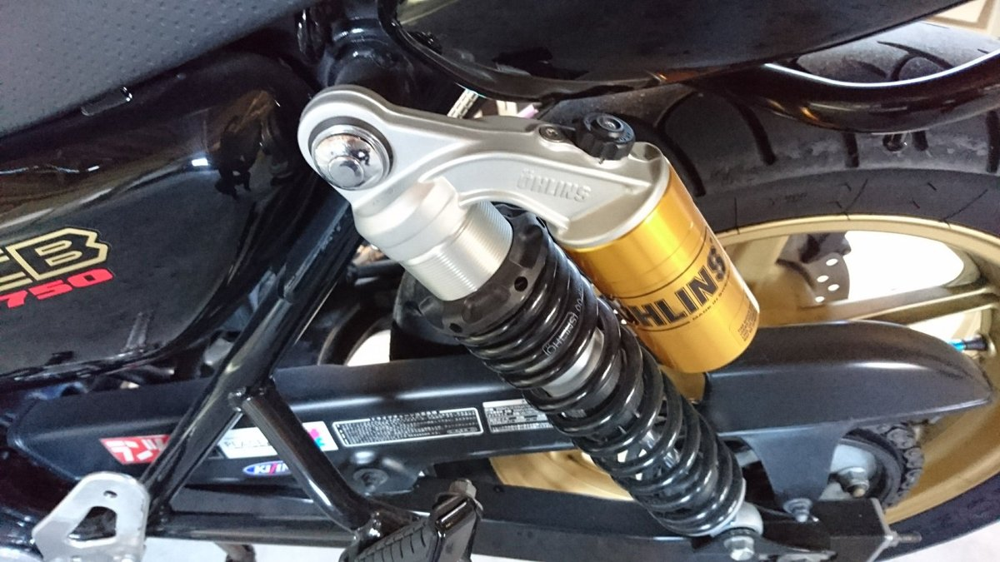
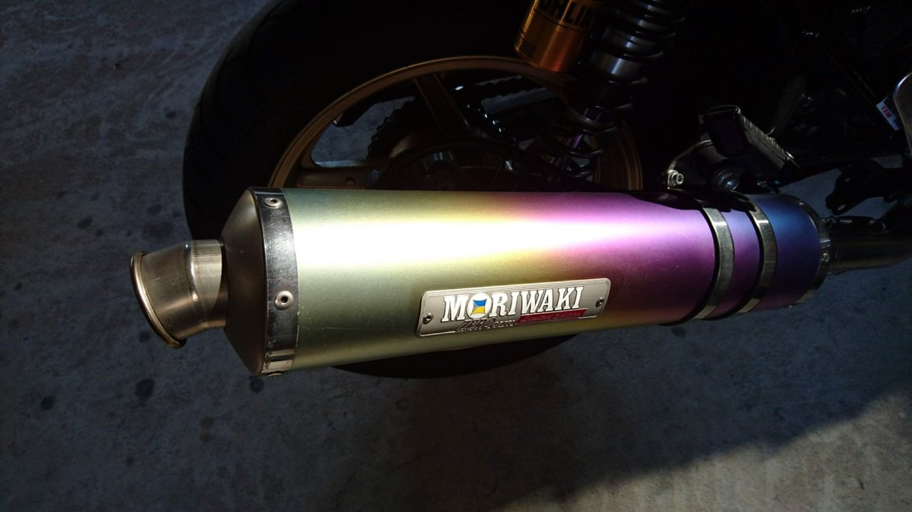

バイクのカスタムは、性能のためだけにするものではありません。筆者がCB750に付けているオーリンズのサスペンションとモリワキのマフラーは、どちらも「付いているだけでうれしくなる」パーツです。
オーリンズのリアサスペンション

オーリンズ（Öhlins）は、スウェーデンのサスペンションメーカーです。公式サイトによると、バイク・車・自転車などのサスペンションを作っていて、車両メーカーの純正部品にも使われています。
筆者のCB750に付いているのは、左右2本のリアサスペンション（ツインショック）です。本体の横にゴールドのリザーバータンクが付いていて、タンクには「ÖHLINS」と「MADE IN SWEDEN」の文字があります。
モリワキのマフラー

モリワキ（モリワキエンジニアリング）は、マフラーをはじめ、バックステップやガードなどのバイク用パーツを作っている日本のメーカーです。
筆者のマフラーは、黄色から紫、青へと色が移り変わる焼け色が特徴です。銘板(筆者の言う「ステッカー」)には、「MORIWAKI」のロゴと「ZERO」「Limited Edition」の文字が入っています。
購入リンクを載せていない理由
この2つのパーツは、筆者の手元で型番を確かめられていません。マフラーは銘板に「Limited Edition」とある限定品で、2026年11月にモリワキの公式サイトや通販サイトを調べましたが、同じものがいまも売られているかは確認できませんでした。
この道具ええやん.comでは、筆者が使っているものと同じ商品だけにリンクを付け、似た商品で代わりにすることはしていません。型番が分かり、同じ商品が見つかったら、販売先を追加します。
サスペンションやマフラーを選ぶときに確かめたいこと
同じ車名でも、年式や型式で取り付けられる部品が変わります。メーカーの適合表や販売ページで、自分のバイクの型式に合うかを確かめましょう。
サスペンションやマフラーは、走りと安全に直接かかわる部品です。取り付けや調整に自信がなければ、バイク販売店やショップにお願いしましょう。
マフラーは、音の大きさなどの基準に合った製品でないと、公道を走れなかったり車検に通らなかったりします。公道で使うなら、基準に合った製品かどうかを販売店で確かめてください。